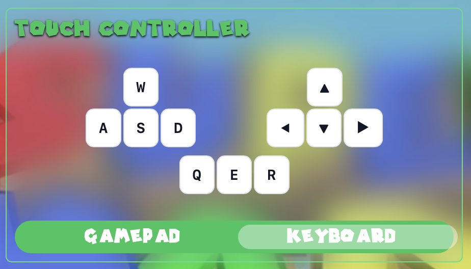

Christian Galeone - Matricola 1103454
A.A. 2024-2025
Introduzione
Il progetto 'Super Mario 64 in WebGL' è stato realizzato come prova finale del corso "Fondamenti di Computer Graphics M".
L'obiettivo del progetto è quello di sviluppare un'applicazione web interattiva con scena tridimensionale, utilizzando la libreria grafica WebGL, Javascript e il linguaggio di shading OpenGL ES SL.
Per scoprire tutti i requisiti del progetto, visitare README.md
Il risultato del progetto è una simulazione di tre scene iconiche del videogioco Super Mario 64.

Architettura
L'architettura del progetto parte da un template HTML di Intellij IDEA, ed è stato strutturato in directories nel seguente modo:
assets
directory che contiene tutte le immagini, i font, gli audio, i file json e i file obj necessari alla realizzazione della scena.
File JSON
I file JSON sono stati utilizzati come file di configurazione per caricare la scena. Essi contengono tutto i dati necessari per rappresentare gli elementi della scena.
css
contiene i fogli di stile. Per conoscenze e comodità è stato utilizzato il framework TailwindCSS, che ha velocizzato il processo di realizzazione dello stile del sito.
lib
contiene i file di libreria, ovvero tutte le funzioni utili create dall'autore (considerati interni).
resources
contiene le risorse esterne fornite dal professore per la realizzazione del progetto.
src
cartella sorgente che contiene la logica dell'applicazione.
Di seguito viene mostrata la struttura della directory src
Per la realizzazione del progetto è stato seguito il principio di separazione previsto dal clean code, in questo modo ogni classe esegue soltanto ciò che è di sua competenza.
La classe scene agisce come orchestratore: le classi vengono inizializzate e utilizzate al suo interno.
Breve spiegazione di cosa si occupa ogni file in breve:
Controller2d creazione del controller che simula un controller N64 con canvas 2D KeyController gestisce la interazioni utente via tastiera MouseController gestisce la interazioni utente via mouse TouchController gestisce la interazioni touch dell'utente App si occupa di caricare la scena e di gestire il cambio di contestoCamera gestisce la camera della scenaGUI gestisce l'interfaccia dei controlli basandosi sulla libreria dat_gui.jsLight gestisce le luci della scenaMeshObj si occupa del caricamento e della gestione dei model 3D Render si occupa di fare il render della scenaScene orchestratore e punto nevralgico dell'applicazioneShadow gestisce le ombre della scenaSkybox gestisce le skybox della scena (se presenti)
Interfaccia
L'interfaccia dell'applicazione è stata fatta a tema Super Mario 64: ho voluto realizzare qualcosa che richiamasse in tutto e per tutto il gioco,
per cui ho importato il font del gioco e cercato di sfruttarne anche i colori. Inoltre, l'interfaccia si presenta come una griglia in cui alla sinistra abbiamo
il nostro canvas dove vengono mostrate le scene, e vi è possibilità di selezionare tra tre scene iconiche del gioco; alla destra - o in basso su smartphone - invece,
c'è la sezione dedicata ai comandi: nella parte superiore potete trovare una tastiera touch che simula i bottoni fisici o, se preferite, si può cambiare
e passare al controller N64!
Per migliorare l'esperienza utente, ho inserito anche delle immagini che richiamino l'interfaccia del gioco (vedi parte superiore della scena) e ho
inserito le canzoni di ogni scena, che si caricano ogni volta che se ne seleziona una. In questo modo l'esperienza diventa del tutto immersiva!
Scena 1 (Bomb-Omb Battlefield)
Per soddisfare il requisito di inserire una immagine texture con la mia foto, ho pensato di riprodurre la stanza del primo livello, chiamato "Bomb-Omb Battlefield"
La stanza è molto semplice, e si presenta con un immenso quadro del livello con un palco sotto. In aggiunta, ho voluto inserire anche l'iconica stella del gioco, che in realtà non compare nella scena.
Scena 2 (Peach Castle)
Questa scena è stata quello che ha fatto iniziare tutto, il mio punto di ispirazione. Essendo una costruzione un po' più complessa, ho cercato
di semplificarla il più possibile, ma questo comunque mi ha portato alcuni problemi: sebbene se su Blender i modelli non avessero distorsioni,
su Web, invece, sono venuti fuori alcuni effetti che sono un po' fastidiosi.
In ogni caso ho deciso di tenere anche questa scena per mostrare il frutto del mio lavoro.
Scena 3 (Bowser In the Sky)
Proprio come nel gioco, questa rappresenta l'ultima scena prima del boss finale: una volta entrato in quel tubo,
per salvare Peach, Mario dovrà sfidare il suo acerrimo nemico Bowser. Per questo motivo, ho voluto inserire anche questa scena,
in cui ho potuto sperimentare l'utilizzo delle skybox. Ho cercato di utilizzare l'immagine originale, che non ha
una qualità elevata: per questo motivo, l'effetto può risultare un po' nauseante.
Per essere fedeli al gioco, all'interno della scena sono stati inseriti un cuore che ruota (a cui è stata applicata la trasparenza) e la moneta rossa.
Controllo Scena
Per il controllo delle impostazioni della scena, è stata utilizzata la libreria dat.GUI.
Grazie a questa è possibile gestire le impostazioni della camera, l'attivazione/disattivazione delle ombre e la gestione delle luci.
Riguardo l'interazione con l'utente, quest'ultimo può muoversi nella scena in tre modi diversi:
- Utilizzando la tastiera fisica
- Utilizzando il mouse
- Tramite Tocco
- Movimento del dito
- Interfaccia Tastiera

- Interfaccia Gamepad (prende ispirazione da Controller N64)
I tasti per controllare il movimento la direzione di vista sono visibili nel menù laterale a destra.
Scene.js
Il file scene.js è il cuore dell'applicazione: agisce da orchestratore inizializzando tutte le classi di cui ha
bisogno si occupa del rendering della scena. Il suo costruttore è così formato:
Il costruttore di Scene esegue le seguenti operazioni:
- Inizializzazione contesto WebGL da canvas
- Inizializzazione WebGL Program a partire dagli shader
- Lettura del file di configurazione json per caricare gli elementi della scena
Metodi
La classe scene non presenta metodi, ma soltanto un getter utilizzato per calcolare la projection matrix della scena utilizzando la libreria m4.js.
get projectionMatrix() {
return m4.perspective(
degToRad(scene.camera.fieldOfView),
scene.camera.aspectRatio,
scene.camera.zNear,
scene.camera.zFar
);
File di configurazione JSON
Il file scene.json è lo scheletro di ogni scena: qui vengono settate le impostazioni iniziali della scena.
In questo file viene impostato:
- Skybox
- Inizializzazione impostazioni camera - modificabili poi da menù
- Localizzato audio mp3 da caricare
- Inizializzazione impostazioni luce - modificabili poi da menù
- Caricamento modelli 3D Mesh - per ogni mesh viene specificato nome, path file
.obj e path file .mtl
- Inizializzazione Camera
- Inizializzazione Luci
- Inizializzazione Controller

Render.js
Il file render.js viene utilizzato per renderizzare l'intera scena. Per motivi di scope, questa funzione è stata messa all'esterno della classe Scene
Render base
La scene disegnata con il rendering base ha queste caratteristiche:
- supporto per texture e colori - grazie agli shaders
- luce diffusa
- specular lightning
Render avanzato
La tecnica di rendering avanzato che ho scelto per il mio progetto sono le ombre, realizzate con tecnica di shadow mapping.
Per poter generare le ombre la scena viene disegnata due volta, prima dal punto di vista della luce per generare una shadowmap,
poi dal punto di vista dell’osservatore utilizzando la shadowmap generata per capire se un punto è in ombra o meno.
Per la realizzazione, è necessario attivare il culling, tramite il comando gl.enable(gl.CULL_FACE). Per questo motivo le pareti della stanza diventano invisibili.
Metodi
Nel file render.js troviamo i metodi per il render della scena. Questo file copre tutte le situazioni che possono essere gestite anche dal pannello della scena.
- render funzione che si occupa di effettuare il render della scena e chiama i metodi privati sottostanti
- renderWithShadows si occupa di effettuare il render mostrando le ombre della scena
- renderWithoutShadows funzione complementare di quella sopra
- renderSkybox funzione che effettua il rendering della skybox (se necessario)
- showFrustum funzione che permette di visualizzare il frustum della luce
Per il render è stato attivato gl.BLEND per cui, se un materiale di un oggetto ha opacità minore di uno, questo verrà disegnato con una trasparenza.
MeshObj.js
Il file mesh_obj.js contiene la classe per il caricamento, l'inizializzazione e il rendering delle figure mesh 3D da caricare nella scena.
Blender
Tutti i modelli 3D presenti nella scena sono stati creati dall'autore utilizzando Blender. Successivamente, questi sono stati esportati in formato .obj e integrati nel codice. I file .blender sono presenti nel codice.
Inizializzazione
Per l'inizializzazione della mesh viene in supporto il file json di configurazione, il quale riporta per ogni mesh le seguenti specifiche:
- nome identifica la mesh
- objSource identifica il percorso del file
.obj
- mtlSource identifica il percorso del file
.mtl
- position identifica la posizione iniziale della mesh rispetto alla scena [0,0,0 di default]
- initialRotation (facoltativo) indica che la mesh deve essere ruotata in base agli assi specificati
- initialScale (facoltativo) indica che la mesh deve essere scalata per il valore riportato
- rotate (facoltativo) indica che la mesh deve essere ruotata dinamicamente in base agli assi specificati
Caricamento
Per la fase di caricamento si utilizza la funzione loadMesh(), presa dalla libreria fornita load_mesh.js. Il risultato di questa funzione viene dato in pasto a una funzione che si occupa di comporre la mesh, chiamata composeMesh().
Questa funzione si occupa di assegnare un materiale (di default) alle mesh, assegnare la posizione iniziale e si occupa di passare gli attribute al vertex shader, sfruttando la funzione createBufferInfoFromArrays(gl, data) della libreria
WebGLUtils.
Render
Per il render delle mesh è stata creata una funzione apposita. Questa disegna l’oggetto utilizzando il programma e le uniform specificate nei parametri. Viene chiamata dalla funzione render che si occupa di scegliere programInfo e uniform a seconda del tipo di rendering scelto.
Avendo program e uniforms parametrizzati la funzione di rendering è unica per tutti le modalità di disegno.
La funzione computeModelMatrix() si occupa di generare il model matrix seguendo tutte le direttive del file json riguardo posizione, rotazione statica e dinamica, e scaling.
Camera.js
Rappresenta la camera da cui viene osservata la scena.
Il punto di vista può essere spostato all'interno dell'ambiente 3D in maniera libera.
L'orientamento della camera viene definito (ma anche modificato) dai seguenti tre assi ortogonali espressi in coordinate globali:
position posizione nello spazio della camera.
forward vettore che punta davanti la camera.
right vettore che punta alla destra della camera.
up vettore che punta verso l’alto.
Metodi
Sono stati replicati i principali movimenti della produzione video.
Shadow.js
Classe che si occupa della preparazione e della gestione dei dati delle ombre. Il costruttore esegue le seguenti funzioni:
- compilazione shaders corrispondenti.
- creazione di una texture utilizzata come depth map.
- impostazione dei valori utilizzati in fase di rendering.
Metodi
La classe presenta i metodi toggle() per l'attivazione/disattivazione delle ombre e toggleShowFrustum() per l'attivazione/disattivazione del frustum di luce.
Riferimenti
Per la realizzazione del progetto, oltre alle slide e al codice visto durante il corso, è stato fatto riferimento ai seguenti articoli:
Github Repository